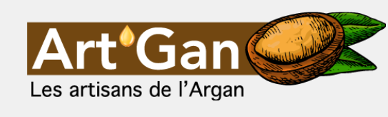
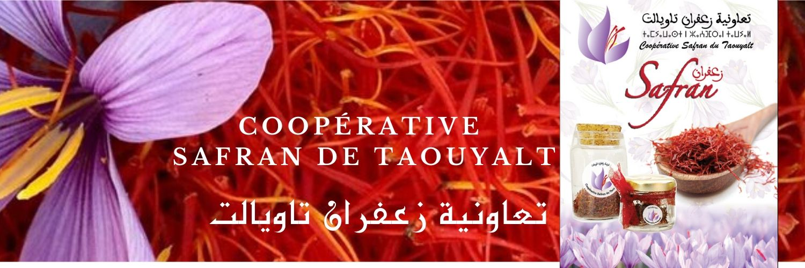
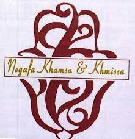

Bienvenue dans le pôle produit de terroir du SIAM
Ce pôle est dédié aux coopératives et associations de tout le Royaume, dont les productions ont été certifiées par des labels (AOC et IG) ou par l’ONSSA. Il rassemble la richesse indélocalisable de nos terroirs, matrice et marqueur fort de l’identité territoriale, et symbole de fierté. Ce lieu, centre d’une dynamique commerciale intense durant le Salon, nous offre aussi un véritable voyage à travers le Maroc par les sens, les couleurs, les odeurs, les goûts… Le SIAM est l’assise de base pour exposer, promouvoir et faire connaitre au niveau international les produits phares, leurs spécificités et leur histoire.
Huile d'Argan et produits dérivés pour de dévellopement de la femme rurale

Coopératives de la production et la valorisation du Safran

Coopératives de la production et la valorisation des produits de terroir